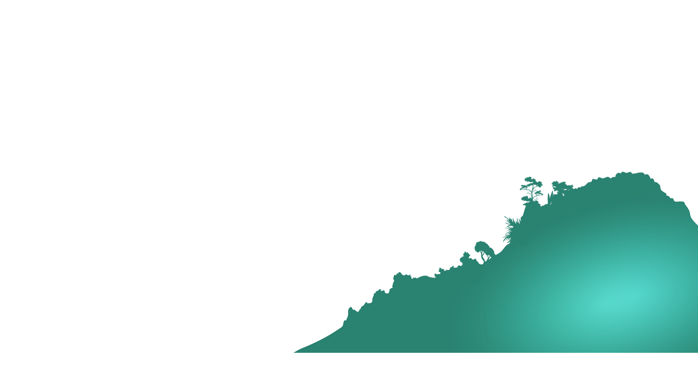

"At Cambium, we embrace the United Nations Sustainable Development Goal (SDG) 15 - "LIFE ON LAND" as a cornerstone of our mission. Our commitment extends to the protection and nurturing of terrestrial ecosystems, including forests, mountains, and the diverse array of animal species they support. Through proactive conservation efforts, sustainable land management practices, and community engagement, we strive to safeguard the integrity and resilience of these ecosystems. By advocating for the preservation of habitats, biodiversity, and the well-being of all living creatures, we envision a future where life on land thrives harmoniously with human activities, ensuring a sustainable and vibrant planet for generations to come. "